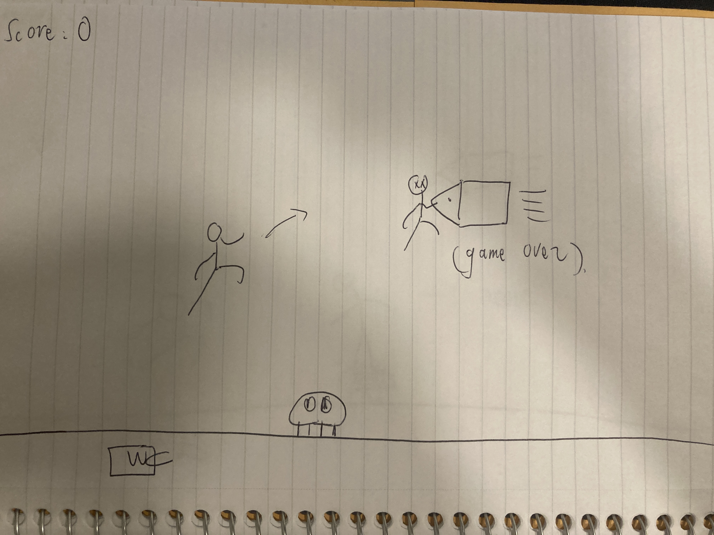
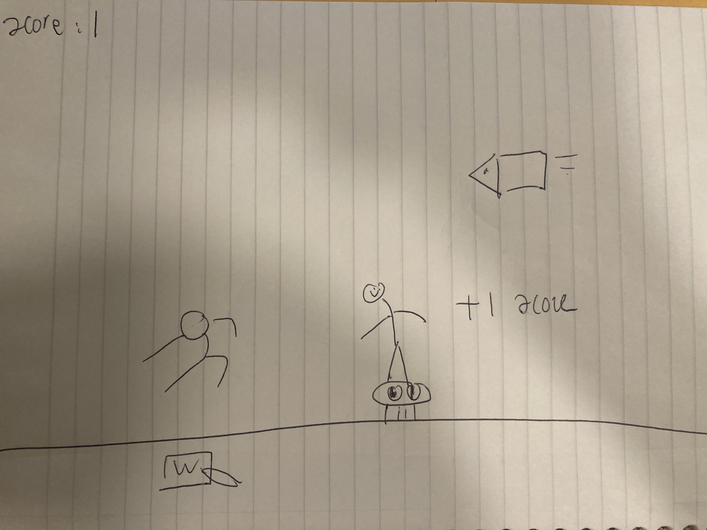

Description
- Mario game: Mario could jump on monsters and kill them to get a score, but Mario will die if they contact monsters face to face.

Drawing

Drawing
Prototype version
- In the Javascript file, a draft version which continues to develop on the MP3. The monsters are without the images, just use squares to represent. The background is just blue without decoration. Set up the HTML, CSS and Json file.
Final Version
- In the Javascript file, fill in with sky background and insert the Bald Cleft, Banzai Bill, inside of the game to be the monsters on the ground and in the sky. Hopefully players could also use “A” and “D” to control Mario moving forward or backward. Deploying the game to online platforms.
Plan
- Follow the instruction “Dev Toolchain Walkthrough” to start with setting up the HTML, CSS, Json and Rollup.
- Clone my MP3 JS file and continue developing it - trying to set up 2 obstacles groups: one is on the ground, another one is still in the sky.
- Trying to solve how to make Mario kill monsters by jumping on monsters and dying by contacting monsters face to face.
- Changing the scoring rule and finishing set up the Prototype version
- Loading the background color and insert Bald Cleft as ground monster and Banzai Bill as sky monster.
- Try to let Mario move forward and backwards without changing the camera position
- Refined the endGame interface
- Refined the endGame interface
Finished the Final Version and deployed it
A list of known unknowns
-
Make Mario kill monsters by jumping on monsters and dying by contacting monsters face to face.
-
Let Mario move forward and backwards without changing the camera position
-
Insert Bald Cleft as ground monster and Banzai Bill as sky monster
A list of stretch goals
-
Deploy is working!
-
Both obstacles groups with monsters’ images are in the correct position
-
Making the refined version of EndGame interface